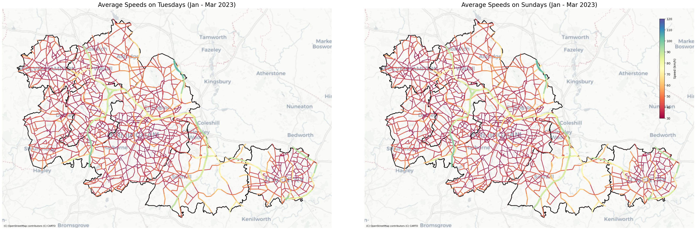
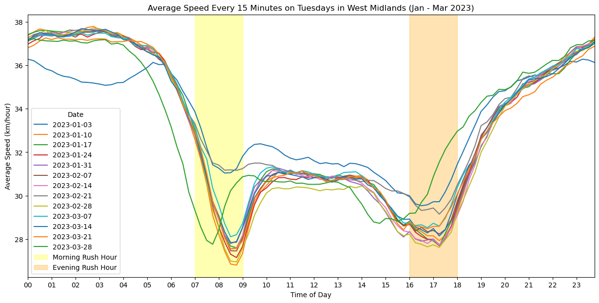
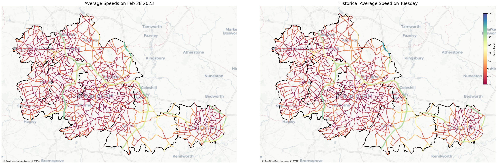

Code
import pandas as pd
import seaborn as sns
import matplotlib.pyplot as plt
import matplotlib.dates as mdates
from datetime import timedelta, datetime, time
import geopandas as gpd
from shapely.geometry import LineString
import contextily as ctxINRIX Exploration
import pandas as pd
import seaborn as sns
import matplotlib.pyplot as plt
import matplotlib.dates as mdates
from datetime import timedelta, datetime, time
import geopandas as gpd
from shapely.geometry import LineString
import contextily as ctxtuesday = pd.read_csv('./tuesday_1-3.csv')
network = pd.read_csv('./network.csv')
# tuesday.drop(columns=['UTC Date Time'],inplace=True)# tuesday.drop(columns=['Unnamed: 0'],inplace=True)
tuesday| Date Time | Segment ID | Speed(km/hour) | Hist Av Speed(km/hour) | Ref Speed(km/hour) | Travel Time(Minutes) | CValue | Road Closure | Corridor/Region Name | |
|---|---|---|---|---|---|---|---|---|---|
| 0 | 2023-01-03 00:00:00+00:00 | 407698215 | 46.0 | 42.0 | 48 | 0.05 | 93.54 | F | west midlands |
| 1 | 2023-01-03 00:15:00+00:00 | 407698215 | 42.0 | 42.0 | 48 | 0.05 | 99.50 | F | west midlands |
| 2 | 2023-01-03 00:30:00+00:00 | 407698215 | 42.0 | 42.0 | 48 | 0.05 | NaN | F | west midlands |
| 3 | 2023-01-03 00:45:00+00:00 | 407698215 | 42.0 | 42.0 | 48 | 0.05 | NaN | F | west midlands |
| 4 | 2023-01-03 01:00:00+00:00 | 407698215 | 42.0 | 42.0 | 48 | 0.05 | NaN | F | west midlands |
| ... | ... | ... | ... | ... | ... | ... | ... | ... | ... |
| 16030555 | 2023-03-28 22:45:00+00:00 | 432189546 | 40.0 | 40.0 | 32 | 0.17 | NaN | F | west midlands |
| 16030556 | 2023-03-28 23:00:00+00:00 | 432189546 | 39.0 | 39.0 | 32 | 0.18 | NaN | F | west midlands |
| 16030557 | 2023-03-28 23:15:00+00:00 | 432189546 | 37.0 | 37.0 | 32 | 0.18 | NaN | F | west midlands |
| 16030558 | 2023-03-28 23:30:00+00:00 | 432189546 | 37.0 | 37.0 | 32 | 0.18 | NaN | F | west midlands |
| 16030559 | 2023-03-28 23:45:00+00:00 | 432189546 | 37.0 | 37.0 | 32 | 0.18 | NaN | F | west midlands |
16030560 rows × 9 columns
Traffic Data Fields Description
# network.drop(columns=['Unnamed: 0'],inplace=True)
network| Segment ID | Road | Direction | Start Latitude | End Latitude | Start Longitude | End Longitude | State/Region | District | Postal Code | Segment Length(Kilometers) | Intersection | |
|---|---|---|---|---|---|---|---|---|---|---|---|---|
| 0 | 675228651 | 454 / Bridgnorth Road | W | 52.582600 | 52.580308 | -2.192500 | -2.205406 | England | WEST MIDLANDS | WV6 8 | 0.931855 | A454 |
| 1 | 675271701 | 454 / Bridgnorth Road | W | 52.584766 | 52.582600 | -2.182250 | -2.192500 | England | WEST MIDLANDS | WV6 8 | 0.770868 | A454 / Firsway |
| 2 | 350648483 | 454 / Bridgnorth Road | W | 52.586800 | 52.584766 | -2.170190 | -2.182250 | England | WEST MIDLANDS | WV6 8 | 0.949361 | A454 / B4161 |
| 3 | 675183593 | 454 / Compton Road West | W | 52.586351 | 52.586800 | -2.161926 | -2.170190 | England | WEST MIDLANDS | WV3 9 | 0.595098 | A454 / Linden Lea |
| 4 | 675233218 | 454 / Compton Road | W | 52.586249 | 52.586351 | -2.150620 | -2.161926 | England | WEST MIDLANDS | WV3 9 | 0.772230 | A454 / Westland Road |
| ... | ... | ... | ... | ... | ... | ... | ... | ... | ... | ... | ... | ... |
| 13027 | 476312483 | NaN | N | 52.509660 | 52.510900 | -1.747060 | -1.748760 | England | WEST MIDLANDS | B36 9 | 0.180535 | NaN |
| 13028 | 476312479 | NaN | E | 52.489950 | 52.489350 | -1.815580 | -1.814430 | England | WEST MIDLANDS | B8 2 | 0.102928 | A4040 |
| 13029 | 207419439 | NaN | C | 52.587040 | 52.586940 | -2.056800 | -2.056760 | England | WEST MIDLANDS | WV13 1 | 0.015527 | NaN |
| 13030 | 450553046 | Marpen Road | E | 52.422550 | 52.422380 | -1.501010 | -1.500720 | England | WEST MIDLANDS | CV6 5 | 0.027277 | Paragon Way / Marpen Road |
| 13031 | 450553047 | Marpen Road | N | 52.422380 | 52.422550 | -1.500720 | -1.501010 | England | WEST MIDLANDS | CV6 5 | 0.027277 | Chelmsford Drive / Marpen Road |
13032 rows × 12 columns
# Read data
daily_average_speed = pd.read_csv('daily_average_speed.csv')
daily_average_speed['Date'] = pd.to_datetime(daily_average_speed['Date'])
# Set plot style using Seaborn
sns.set_theme(style="whitegrid")
# Create a figure
plt.figure(figsize=(20, 7))
plot = sns.lineplot(x='Date', y='Speed(km/hour)', data=daily_average_speed, marker='o', color='deepskyblue', label='Daily Speed')
# Set date format and labels as months
plot.xaxis.set_major_locator(mdates.MonthLocator()) # Show a main label each month
plot.xaxis.set_major_formatter(mdates.DateFormatter('%B')) # Use full month names
# Calculate and plot 7-day moving average
daily_average_speed['7-Day MA'] = daily_average_speed['Speed(km/hour)'].rolling(window=7, min_periods=1).mean()
sns.lineplot(x='Date', y='7-Day MA', data=daily_average_speed, color='red', label='7-Day Moving Average')
# Add different background colour blocks for each week
start_date = daily_average_speed['Date'].min()
end_date = daily_average_speed['Date'].max()
current = start_date
week_counter = 0
colors = ["grey", "lightgrey"]
while current <= end_date:
next_week = current + timedelta(days=7)
if next_week > end_date:
next_week = end_date + timedelta(days=1) # Include the last day
plt.axvspan(current, next_week, color=colors[week_counter % 2], alpha=0.3)
current = next_week
week_counter += 1
# Calculate and plot monthly average speed
daily_average_speed['Month'] = daily_average_speed['Date'].dt.to_period('M')
monthly_average_speed = daily_average_speed.groupby('Month')['Speed(km/hour)'].mean().reset_index()
monthly_average_speed['Date'] = monthly_average_speed['Month'].dt.start_time + pd.Timedelta(days=14)
sns.lineplot(x='Date', y='Speed(km/hour)', data=monthly_average_speed, color='green', marker='o', label='Monthly Average Speed')
# Set the title and axis labels
plt.title('Daily Average Speed with 7-Day and Monthly Averages (2023)')
plt.xlabel('Month')
plt.ylabel('Average Speed (km/h)')
# Set the chart's x-axis range within the data range
plt.xlim(daily_average_speed['Date'].min(), daily_average_speed['Date'].max())
# Display the chart
plt.legend()
plt.tight_layout()
plt.show()# Read data
daily_average_speed = pd.read_csv('daily_average_speed.csv')
daily_average_speed['Date'] = pd.to_datetime(daily_average_speed['Date'])
# Add a column indicating the day of the week
daily_average_speed['Weekday'] = daily_average_speed['Date'].dt.day_name()
# Set plot style using Seaborn
sns.set_theme(style="whitegrid")
# Create a figure
plt.figure(figsize=(20, 7))
# Plot average daily speed for each day of the week
weekdays = ['Monday', 'Tuesday', 'Wednesday', 'Thursday', 'Friday', 'Saturday', 'Sunday']
colors = sns.color_palette('husl', n_colors=7)
for i, day in enumerate(weekdays):
# Plot the line chart for each day of the week
sns.lineplot(
x='Date',
y='Speed(km/hour)',
data=daily_average_speed[daily_average_speed['Weekday'] == day],
color=colors[i],
label=day
)
# Set date format and labels as months
plot = plt.gca()
plot.xaxis.set_major_locator(mdates.MonthLocator()) # Show a main label each month
plot.xaxis.set_major_formatter(mdates.DateFormatter('%B')) # Use full month names
# Set the title and axis labels
plt.title('Daily Average Speed by Weekday (2023)')
plt.xlabel('Month')
plt.ylabel('Average Speed (km/h)')
# Set the chart's x-axis range within the data range
plt.xlim(daily_average_speed['Date'].min(), daily_average_speed['Date'].max())
# Adjust layout and display the chart
plt.legend(title='Weekday', loc='upper right', bbox_to_anchor=(1, 1))
plt.tight_layout()
plt.show()# Calculate the average speed for each Segment ID in the dataset
sunday = pd.read_csv('./sunday_1-3.csv')
tuesdays_average_speeds = tuesday.groupby('Segment ID')[['Speed(km/hour)', 'Hist Av Speed(km/hour)']].mean().reset_index()
sundays_average_speeds = sunday.groupby('Segment ID')[['Speed(km/hour)', 'Hist Av Speed(km/hour)']].mean().reset_index()
# Merge the average speeds with the network dataset
tuesdays_merged_data = network.merge(tuesdays_average_speeds, on='Segment ID', how='left')
sundays_merged_data = network.merge(sundays_average_speeds, on='Segment ID', how='left')
# Correct the LineString creation
tuesdays_avg = gpd.GeoDataFrame(
tuesdays_merged_data,
geometry=[LineString([(x, y), (x2, y2)]) for x, y, x2, y2 in zip(
tuesdays_merged_data['Start Longitude'],
tuesdays_merged_data['Start Latitude'],
tuesdays_merged_data['End Longitude'],
tuesdays_merged_data['End Latitude'])
]
)
sundays_avg = gpd.GeoDataFrame(
sundays_merged_data,
geometry=[LineString([(x, y), (x2, y2)]) for x, y, x2, y2 in zip(
sundays_merged_data['Start Longitude'],
sundays_merged_data['Start Latitude'],
sundays_merged_data['End Longitude'],
sundays_merged_data['End Latitude'])
]
)
cmap='Spectral'
vmax=120
vmin=30
# Setup the coordinate systems
tuesdays_avg.crs = "EPSG:4326"
sundays_avg.crs = "EPSG:4326"
tuesdays_avg = tuesdays_avg.to_crs(epsg=3857)
sundays_avg = tuesdays_avg.to_crs(epsg=3857)
wm_shp = wm_shp.to_crs(epsg=3857)
# Create subplots
fig, (ax1, ax2) = plt.subplots(1, 2, figsize=(40, 20))
plt.subplots_adjust(left=0, right=1, top=1, bottom=0, wspace=0.1, hspace=0.2)
# Adjust linewidth based on speed
tuesdays_avg['linewidth'] = tuesdays_avg['Speed(km/hour)'] / tuesdays_avg['Speed(km/hour)'].max() * 5
sundays_avg['linewidth'] = sundays_avg['Speed(km/hour)'] / sundays_avg['Speed(km/hour)'].max() * 5
# First subplot for Tuesdays
tuesdays_avg = tuesdays_avg.sort_values(by='Speed(km/hour)', ascending=True)
tuesdays_avg.plot(ax=ax1, linewidth=tuesdays_avg['linewidth'], column='Speed(km/hour)',
cmap=cmap, vmin=vmin, vmax=vmax, zorder=3)
wm_shp.plot(ax=ax1, color='none', edgecolor='black', linewidth=2, zorder=2)
ctx.add_basemap(ax1, source=ctx.providers.CartoDB.Positron)
ax1.set_axis_off()
ax1.set_title('Average Speeds on Tuesdays (Jan - Mar 2023)', fontdict={'fontsize': '20', 'fontweight': '3'})
# Second subplot for Sundays
sundays_avg = sundays_avg.sort_values(by='Speed(km/hour)', ascending=True)
sundays_avg.plot(ax=ax2, linewidth=sundays_avg['linewidth'], column='Speed(km/hour)',
cmap=cmap, vmin=vmin, vmax=vmax, zorder=3)
wm_shp.plot(ax=ax2, color='none', edgecolor='black', linewidth=2, zorder=2)
ctx.add_basemap(ax2, source=ctx.providers.CartoDB.Positron)
ax2.set_axis_off()
ax2.set_title('Average Speeds on Sundays (Jan - Mar 2023)', fontdict={'fontsize': '20', 'fontweight': '3'})
# Create a color bar
sm = plt.cm.ScalarMappable(cmap=cmap, norm=plt.Normalize(vmin=vmin, vmax=vmax))
sm.set_array([]) # You need to set the array for the ScalarMappable to work
cbar = fig.colorbar(sm, ax=[ax1, ax2], orientation='vertical', shrink=0.5)
cbar.set_label('Speed (km/h)')
# Adjust the color bar position
cbar.ax.set_position([0.76, 0.5, 0.04, 0.23])
# Display the plot
plt.show()
# Separate date and time
tuesday['Date'] = pd.to_datetime(tuesday['Date Time']).dt.date
tuesday['Time'] = pd.to_datetime(tuesday['Date Time']).dt.strftime('%H:%M')
# Group by each date and time interval, calculating average speed
grouped = tuesday.groupby(['Date', 'Time'])
# Calculate average speeds
average_speeds = grouped['Speed(km/hour)'].mean().unstack(0)
# Create figure and axis objects
fig, ax = plt.subplots(figsize=(15, 7))
# Plot average speed curves for each date
for date in average_speeds.columns:
# First convert time strings to datetime.time objects
times = [datetime.strptime(t, '%H:%M').time() for t in average_speeds.index]
# Then combine the date and time into datetime objects
times = [datetime.combine(datetime.today(), t) for t in times]
# Convert time to Matplotlib's internal format
times = mdates.date2num(times)
ax.plot(times, average_speeds[date], label=date)
# Set chart title and axis labels
ax.set_title('Average Speed Every 15 Minutes on Tuesdays in West Midlands (Jan - Mar 2023)')
ax.set_xlabel('Time of Day')
ax.set_ylabel('Average Speed (km/hour)')
# Set x-axis range from the start to the end of one day
ax.set_xlim(mdates.date2num(datetime.combine(datetime.today(), time(0, 0))), mdates.date2num(datetime.combine(datetime.today(), time(23, 45))))
# Highlight specific time periods
ax.axvspan(mdates.date2num(datetime.combine(datetime.today(), time(7, 0))), mdates.date2num(datetime.combine(datetime.today(), time(9, 0))), color='yellow', alpha=0.3, label='Morning Rush Hour')
ax.axvspan(mdates.date2num(datetime.combine(datetime.today(), time(16, 0))), mdates.date2num(datetime.combine(datetime.today(), time(18, 0))), color='orange', alpha=0.3, label='Evening Rush Hour')
# Use HourLocator to ensure an hourly label on the x-axis
ax.xaxis.set_major_locator(mdates.HourLocator(interval=1))
ax.xaxis.set_major_formatter(mdates.DateFormatter('%H'))
# Display the legend"
ax.legend(title="Date")
# Show the plot
plt.show()
# Filter data for January 3, 2023
jan03 = tuesday[tuesday['Date Time'].dt.date == pd.to_datetime('2023-01-03').date()].copy()
mar28 = tuesday[tuesday['Date Time'].dt.date == pd.to_datetime('2023-03-28').date()].copy()
# Convert UTC time to local time, then extract the time part
jan03['Time'] = pd.to_datetime(jan03['Date Time']).dt.time
mar28['Time'] = pd.to_datetime(mar28['Date Time']).dt.time
# Calculate average speeds for each 15-minute interval
average_speeds_per_interval_jan03 = jan03.groupby(jan03['Time'])[['Speed(km/hour)', 'Hist Av Speed(km/hour)', 'Ref Speed(km/hour)']].mean()
average_speeds_per_interval_mar28 = mar28.groupby(mar28['Time'])[['Speed(km/hour)', 'Hist Av Speed(km/hour)', 'Ref Speed(km/hour)']].mean()
# Create figure and axis objects for two subplots
fig, (ax1, ax2) = plt.subplots(nrows=1, ncols=2, figsize=(30, 7))
# Plot each line
times = [datetime.combine(datetime.today(), t) for t in average_speeds_per_interval_jan03.index]
times = mdates.date2num(times) # Convert time to Matplotlib's internal format
ax1.plot(times, average_speeds_per_interval_jan03['Speed(km/hour)'], label='Current Speed', linewidth=2)
ax1.plot(times, average_speeds_per_interval_jan03['Hist Av Speed(km/hour)'], label='Historical Average Speed', linestyle='--', linewidth=2)
ax1.plot(times, average_speeds_per_interval_jan03['Ref Speed(km/hour)'], label='Reference Speed', linestyle='-.', linewidth=1)
times = [datetime.combine(datetime.today(), t) for t in average_speeds_per_interval_mar28.index]
times = mdates.date2num(times)
ax2.plot(times, average_speeds_per_interval_mar28['Speed(km/hour)'], label='Current Speed', linewidth=2)
ax2.plot(times, average_speeds_per_interval_mar28['Hist Av Speed(km/hour)'], label='Historical Average Speed', linestyle='--', linewidth=2)
ax2.plot(times, average_speeds_per_interval_mar28['Ref Speed(km/hour)'], label='Reference Speed', linestyle='-.', linewidth=1)
# Highlight specific time periods
ax1.axvspan(mdates.date2num(datetime.combine(datetime.today(), time(7, 0))), mdates.date2num(datetime.combine(datetime.today(), time(9, 0))), color='yellow', alpha=0.3, label='Morning Rush Hour')
ax1.axvspan(mdates.date2num(datetime.combine(datetime.today(), time(16, 0))), mdates.date2num(datetime.combine(datetime.today(), time(18, 0))), color='orange', alpha=0.3, label='Evening Rush Hour')
ax2.axvspan(mdates.date2num(datetime.combine(datetime.today(), time(7, 0))), mdates.date2num(datetime.combine(datetime.today(), time(9, 0))), color='yellow', alpha=0.3, label='Morning Rush Hour')
ax2.axvspan(mdates.date2num(datetime.combine(datetime.today(), time(16, 0))), mdates.date2num(datetime.combine(datetime.today(), time(18, 0))), color='orange', alpha=0.3, label='Evening Rush Hour')
# Set title and axis labels
ax1.set_title('Average Speeds Every 15 Minutes for 03 Jan 2023')
ax1.set_xlabel('Time of Day')
ax1.set_ylabel('Average Speed (km/hour)')
ax2.set_title('Average Speeds Every 15 Minutes for 28 Mar 2023')
ax2.set_xlabel('Time of Day')
ax2.set_ylabel('Average Speed (km/hour)')
# Set x-axis range from minimum time to maximum time
ax1.set_xlim(mdates.date2num(datetime.combine(datetime.today(), time(0, 0))), mdates.date2num(datetime.combine(datetime.today(), time(23, 45))))
ax2.set_xlim(mdates.date2num(datetime.combine(datetime.today(), time(0, 0))), mdates.date2num(datetime.combine(datetime.today(), time(23, 45))))
# Use HourLocator to set a label every hour
ax1.xaxis.set_major_locator(mdates.HourLocator(interval=1))
ax1.xaxis.set_major_formatter(mdates.DateFormatter('%H'))
ax2.xaxis.set_major_locator(mdates.HourLocator(interval=1))
ax2.xaxis.set_major_formatter(mdates.DateFormatter('%H'))
# Display the legend
ax1.legend()
ax2.legend()
# Show the plot
fig.tight_layout()
plt.show()No any information was given for reference speed on INRIX website
# Filter data
tuesday['Date Time'] = pd.to_datetime(tuesday['Date Time'])
feb28 = tuesday[tuesday['Date Time'].dt.date == pd.to_datetime('2023-02-28').date()]
# Merge with the network dataset and drop unnecessary columns
feb28 = feb28.merge(network, on='Segment ID', how='left')
feb28 = feb28.drop(columns=['Road', 'Direction', 'State/Region', 'District', 'Unnamed: 0_x', 'Corridor/Region Name', 'CValue', 'Road Closure'])
# Create a GeoDataFrame
feb28['geometry'] = [LineString([(x, y), (x2, y2)]) for x, y, x2, y2 in zip(feb28['Start Longitude'], feb28['Start Latitude'], feb28['End Longitude'], feb28['End Latitude'])]
feb28_gdf = gpd.GeoDataFrame(feb28, geometry='geometry')
# Assuming 'gdf' is your GeoDataFrame, and the CRS is already set
feb28_gdf.crs = "EPSG:4326"
feb28_gdf = feb28_gdf.to_crs(epsg=3857)
# Read and reproject a shapefile
wm_shp = gpd.read_file('./wm_shp/wm_shp.shp')
wm_shp = wm_shp.to_crs(epsg=3857)# Convert UTC time to local time, then extract the time part
feb28['Time'] = pd.to_datetime(feb28['Date Time']).dt.time
# Calculate average speeds for each 15-minute interval
average_speeds_per_interval = feb28.groupby(feb28['Time'])[['Speed(km/hour)', 'Hist Av Speed(km/hour)', 'Ref Speed(km/hour)']].mean()
# Create a figure and axis object
fig, ax = plt.subplots(figsize=(15, 7))
# Plot each line
times = [datetime.combine(datetime.today(), t) for t in average_speeds_per_interval.index]
times = mdates.date2num(times) # Convert time to Matplotlib's internal format
ax.plot(times, average_speeds_per_interval['Speed(km/hour)'], label='Current Speed', linewidth=2)
ax.plot(times, average_speeds_per_interval['Hist Av Speed(km/hour)'], label='Historical Average Speed', linestyle='--', linewidth=2)
ax.plot(times, average_speeds_per_interval['Ref Speed(km/hour)'], label='Reference Speed', linestyle='-.', linewidth=1)
# Highlight specific time periods
ax.axvspan(mdates.date2num(datetime.combine(datetime.today(), time(7, 0))), mdates.date2num(datetime.combine(datetime.today(), time(9, 0))), color='yellow', alpha=0.3, label='Morning Rush Hour')
ax.axvspan(mdates.date2num(datetime.combine(datetime.today(), time(16, 0))), mdates.date2num(datetime.combine(datetime.today(), time(18, 0))), color='orange', alpha=0.3, label='Evening Rush Hour')
# Set the title and axis labels
ax.set_title('Average Speeds Every 15 Minutes for 28 Feb 2023')
ax.set_xlabel('Time of Day')
ax.set_ylabel('Average Speed (km/hour)')
# Set the x-axis range from minimum to maximum time
ax.set_xlim(mdates.date2num(datetime.combine(datetime.today(), time(0, 0))), mdates.date2num(datetime.combine(datetime.today(), time(23, 45))))
# Use HourLocator to set an hourly label on the x-axis
ax.xaxis.set_major_locator(mdates.HourLocator(interval=1))
ax.xaxis.set_major_formatter(mdates.DateFormatter('%H'))
# Display the legend
ax.legend()
# Show the plot
plt.show()# Calculate the average speed for each Segment ID in the dataset
feb28_average_speeds = feb28.groupby('Segment ID')[['Speed(km/hour)', 'Hist Av Speed(km/hour)']].mean().reset_index()
# Merge the average speeds with the network dataset
feb28_merged_data = network.merge(feb28_average_speeds, on='Segment ID', how='left')
# Correct the LineString creation
feb28_avg = gpd.GeoDataFrame(
feb28_merged_data,
geometry=[LineString([(x, y), (x2, y2)]) for x, y, x2, y2 in zip(
feb28_merged_data['Start Longitude'],
feb28_merged_data['Start Latitude'],
feb28_merged_data['End Longitude'],
feb28_merged_data['End Latitude'])
]
)
cmap='Spectral'
vmax=120
vmin=30
# Setup the coordinate systems
feb28_avg.crs = "EPSG:4326"
feb28_avg = feb28_avg.to_crs(epsg=3857)
wm_shp = wm_shp.to_crs(epsg=3857)
# Create subplots
fig, (ax1, ax2) = plt.subplots(1, 2, figsize=(40, 20))
plt.subplots_adjust(left=0, right=1, top=1, bottom=0, wspace=0.1, hspace=0.2)
# Adjust linewidth based on speed
feb28_avg['linewidth1'] = feb28_avg['Speed(km/hour)'] / feb28_avg['Speed(km/hour)'].max() * 5
feb28_avg['linewidth2'] = feb28_avg['Hist Av Speed(km/hour)'] / feb28_avg['Hist Av Speed(km/hour)'].max() * 5
feb28_avg = feb28_avg.sort_values(by='Speed(km/hour)', ascending=True)
# First subplot for 'Speed(km/hour)'
feb28_avg = feb28_avg.sort_values(by='Speed(km/hour)', ascending=True)
feb28_avg.plot(ax=ax1, linewidth=feb28_avg['linewidth1'], column='Speed(km/hour)',
cmap=cmap, vmin=vmin, vmax=vmax, zorder=3)
wm_shp.plot(ax=ax1, color='none', edgecolor='black', linewidth=2, zorder=2)
ctx.add_basemap(ax1, source=ctx.providers.CartoDB.Positron)
ax1.set_axis_off()
ax1.set_title('Average Speeds on Feb 28 2023', fontdict={'fontsize': '20', 'fontweight': '3'})
# Second subplot for 'Hist Av Speed(km/hour)'
feb28_avg = feb28_avg.sort_values(by='Hist Av Speed(km/hour)', ascending=True)
feb28_avg.plot(ax=ax2, linewidth=feb28_avg['linewidth2'], column='Hist Av Speed(km/hour)',
cmap=cmap, vmin=vmin, vmax=vmax, zorder=3)
wm_shp.plot(ax=ax2, color='none', edgecolor='black', linewidth=2, zorder=2)
ctx.add_basemap(ax2, source=ctx.providers.CartoDB.Positron)
ax2.set_axis_off()
ax2.set_title('Historical Average Speed on Tuesday', fontdict={'fontsize': '20', 'fontweight': '3'})
# Create a color bar
sm = plt.cm.ScalarMappable(cmap=cmap, norm=plt.Normalize(vmin=vmin, vmax=vmax))
sm.set_array([]) # You need to set the array for the ScalarMappable to work
cbar = fig.colorbar(sm, ax=[ax1, ax2], orientation='vertical', shrink=0.5)
cbar.set_label('Speed (km/h)')
# Adjust the color bar position
cbar.ax.set_position([0.78, 0.5, 0.04, 0.23])
# Display the plot
plt.show()
import os
import matplotlib.pyplot as plt
from matplotlib.cm import ScalarMappable
from matplotlib.colors import Normalize
from mpl_toolkits.axes_grid1 import make_axes_locatable
import contextily as ctx
# Set parameters
vmin = 20
vmax = 120
cmap = plt.get_cmap('afmhot')
os.makedirs('output_images', exist_ok=True)
# Iterate over each time period
for idx, time_group in feb28_gdf.groupby(feb28_gdf['Date Time'].dt.strftime('%H:%M')):
filename_time = idx.replace(':', '-')
fig, ax = plt.subplots(1, 1, figsize=(15, 10), dpi = 150)
fig.tight_layout(pad=0)
# Adjust the layout
plt.subplots_adjust(left=0, right=1, top=1, bottom=0, wspace=0, hspace=0)
# Add boundaries
wm_shp.plot(ax=ax, color='none', edgecolor='grey', linewidth=2, zorder=2)
time_group['linewidth'] = time_group['Speed(km/hour)'] / time_group['Speed(km/hour)'].max() * 10
time_group_sorted = time_group.sort_values(by='Speed(km/hour)', ascending=True)
# Plot road network
time_group_sorted.plot(ax=ax, linewidth=time_group['linewidth'], column='Speed(km/hour)',
cmap=cmap, legend=False, vmin=vmin, vmax=vmax)
# Add basemap
ctx.add_basemap(ax, source=ctx.providers.CartoDB.DarkMatter, zoom=11)
ax.set_axis_off()
# Create a ScalarMappable with the same normalization and colormap
norm = Normalize(vmin=vmin, vmax=vmax)
sm = ScalarMappable(cmap=cmap, norm=norm)
sm.set_array([]) # Necessary for the ScalarMappable
# Manually set colorbar within the plot axes
cax = fig.add_axes([0.9, 0.55, 0.03, 0.4]) # [left, bottom, width, height]
cbar = fig.colorbar(sm, cax=cax)
cbar.set_label('Speed (km/h)', color='white', fontsize=15)
cbar.ax.yaxis.set_tick_params(color='white', labelcolor='white', labelsize=12) # Adjust labelsize here
plt.setp(plt.getp(cbar.ax.axes, 'yticklabels'), color='white', fontsize=12) # Set fontsize for tick labels
# Set title for time in the bottom left corner
ax.text(0.1, 0.1, idx, transform=ax.transAxes, color='white', fontsize=30, fontweight='bold', ha='left')
# Save the figure
plt.savefig(f'output_images/{filename_time}.png')
plt.close()
# Generate video
os.system("ffmpeg -framerate 4 -pattern_type glob -i 'output_images/*.png' -filter:v 'minterpolate=fps=60:mi_mode=blend' -c:v libx264 -r 30 -pix_fmt yuv420p output_video.mp4")
# # Remove the directory
# os.system('rm -rf output_images')from IPython.display import HTML
# HTML to embed video with loop and specified width and height
HTML(f"""
<video controls autoplay loop width="800" height="500">
<source src="output_video1.mp4" type="video/mp4">
Your browser does not support the video tag.
</video>
""")feb28_gdf['Speed Change(km/hour)'] = feb28_gdf['Speed(km/hour)'] - feb28_gdf['Ref Speed(km/hour)']import os
import matplotlib.pyplot as plt
from matplotlib.cm import ScalarMappable
from matplotlib.colors import Normalize
from mpl_toolkits.axes_grid1 import make_axes_locatable
import contextily as ctx
# Set parameters
vmin = -20
vmax = 20
cmap = plt.get_cmap('turbo_r')
os.makedirs('output_images_1', exist_ok=True)
# Iterate over each time period
for idx, time_group in feb28_gdf.groupby(feb28_gdf['Date Time'].dt.strftime('%H:%M')):
filename_time = idx.replace(':', '-')
fig, ax = plt.subplots(1, 1, figsize=(15, 10), dpi = 150)
fig.tight_layout(pad=0)
# Adjust the layout
plt.subplots_adjust(left=0, right=1, top=1, bottom=0, wspace=0, hspace=0)
# Add boundaries
wm_shp.plot(ax=ax, color='none', edgecolor='grey', linewidth=2, zorder=2)
# Linewidth
min_linewidth = 0.5
max_linewidth = 3
quantile_05 = time_group['Speed(km/hour)'].quantile(0.05)
quantile_95 = time_group['Speed(km/hour)'].quantile(0.95)
normalized_linewidth = ((time_group['Speed(km/hour)'] - quantile_05) / (quantile_95 - quantile_05)
* (max_linewidth - min_linewidth) + min_linewidth)
time_group['linewidth'] = np.maximum(normalized_linewidth, min_linewidth)
# Sort
time_group_sorted = time_group.sort_values(by='Speed Change(km/hour)', ascending=True)
# Plot road network
time_group_sorted.plot(ax=ax, linewidth=time_group['linewidth'], column='Speed Change(km/hour)',
cmap=cmap, legend=False, vmin=vmin, vmax=vmax)
# Add basemap
ctx.add_basemap(ax, source=ctx.providers.CartoDB.DarkMatter, zoom=11)
ax.set_axis_off()
# Create a ScalarMappable with the same normalization and colormap
norm = Normalize(vmin=vmin, vmax=vmax)
sm = ScalarMappable(cmap=cmap, norm=norm)
sm.set_array([]) # Necessary for the ScalarMappable
# Manually set colorbar within the plot axes
cax = fig.add_axes([0.9, 0.55, 0.03, 0.4]) # [left, bottom, width, height]
cbar = fig.colorbar(sm, cax=cax)
cbar.set_label('Speed Change(km/h)', color='white', fontsize=15)
cbar.ax.yaxis.set_tick_params(color='white', labelcolor='white', labelsize=12) # Adjust labelsize here
plt.setp(plt.getp(cbar.ax.axes, 'yticklabels'), color='white', fontsize=12) # Set fontsize for tick labels
# Set title for time in the bottom left corner
ax.text(0.1, 0.1, idx, transform=ax.transAxes, color='white', fontsize=30, fontweight='bold', ha='left')
# Save the figure
plt.savefig(f'output_images_1/{filename_time}.png')
plt.close()
# Generate video
os.system("ffmpeg -framerate 4 -pattern_type glob -i 'output_images_1/*.png' -filter:v 'minterpolate=fps=60:mi_mode=blend' -c:v libx264 -r 30 -pix_fmt yuv420p change.mp4")
# # Remove the directory
# os.system('rm -rf output_images')from IPython.display import HTML
# HTML to embed video with loop and specified width and height
HTML(f"""
<video controls autoplay loop width="800" height="500">
<source src="change.mp4" type="video/mp4">
Your browser does not support the video tag.
</video>
""")# import matplotlib.pyplot as plt
# import numpy as np
# # Create a figure with multiple subplots
# fig, axes = plt.subplots(nrows=30, ncols=5, figsize=(12, 25))
# colormaps = ['Accent', 'Accent_r', 'Blues', 'Blues_r', 'BrBG', 'BrBG_r', 'BuGn', 'BuGn_r', 'BuPu', 'BuPu_r', 'CMRmap', 'CMRmap_r', 'Dark2', 'Dark2_r', 'GnBu', 'GnBu_r', 'Grays', 'Greens', 'Greens_r', 'Greys', 'Greys_r', 'OrRd', 'OrRd_r', 'Oranges', 'Oranges_r', 'PRGn', 'PRGn_r', 'Paired', 'Paired_r', 'Pastel1', 'Pastel1_r', 'Pastel2', 'Pastel2_r', 'PiYG', 'PiYG_r', 'PuBu', 'PuBuGn', 'PuBuGn_r', 'PuBu_r', 'PuOr', 'PuOr_r', 'PuRd', 'PuRd_r', 'Purples', 'Purples_r', 'RdBu', 'RdBu_r', 'RdGy', 'RdGy_r', 'RdPu', 'RdPu_r', 'RdYlBu', 'RdYlBu_r', 'RdYlGn', 'RdYlGn_r', 'Reds', 'Reds_r', 'Set1', 'Set1_r', 'Set2', 'Set2_r', 'Set3', 'Set3_r', 'Spectral', 'Spectral_r', 'Wistia', 'Wistia_r', 'YlGn', 'YlGnBu', 'YlGnBu_r', 'YlGn_r', 'YlOrBr', 'YlOrBr_r', 'YlOrRd', 'YlOrRd_r', 'afmhot', 'afmhot_r', 'autumn', 'autumn_r', 'binary', 'binary_r', 'bone', 'bone_r', 'brg', 'brg_r', 'bwr', 'bwr_r', 'cividis', 'cividis_r', 'cool', 'cool_r', 'coolwarm', 'coolwarm_r', 'copper', 'copper_r', 'cubehelix', 'cubehelix_r', 'flag', 'flag_r', 'gist_earth', 'gist_earth_r', 'gist_gray', 'gist_gray_r', 'gist_grey', 'gist_heat', 'gist_heat_r', 'gist_ncar', 'gist_ncar_r', 'gist_rainbow', 'gist_rainbow_r', 'gist_stern', 'gist_stern_r', 'gist_yarg', 'gist_yarg_r', 'gist_yerg', 'gnuplot', 'gnuplot2', 'gnuplot2_r', 'gnuplot_r', 'gray', 'gray_r', 'grey', 'hot', 'hot_r', 'hsv', 'hsv_r', 'inferno', 'inferno_r', 'jet', 'jet_r', 'magma', 'magma_r', 'nipy_spectral', 'nipy_spectral_r', 'ocean', 'ocean_r', 'pink', 'pink_r', 'plasma', 'plasma_r', 'prism', 'prism_r', 'rainbow', 'rainbow_r', 'seismic', 'seismic_r', 'spring', 'spring_r', 'summer', 'summer_r', 'tab10', 'tab10_r', 'tab20', 'tab20_r', 'tab20b', 'tab20b_r', 'tab20c', 'tab20c_r', 'terrain', 'terrain_r', 'turbo', 'turbo_r', 'twilight', 'twilight_r', 'twilight_shifted', 'twilight_shifted_r', 'viridis', 'viridis_r', 'winter', 'winter_r']
# # Generate data to illustrate the colormap
# gradient = np.linspace(0, 1, 256)
# gradient = np.vstack((gradient, gradient))
# # Plot each colormap
# for ax, cmap in zip(axes.flat, colormaps):
# ax.imshow(gradient, aspect='auto', cmap=plt.get_cmap(cmap))
# ax.set_title(cmap)
# ax.axis('off')
# plt.tight_layout()
# plt.show()# quarto command
quarto render tuesday.ipynb --to pdf
quarto render tuesday.ipynb --to html
quarto preview tuesday.ipynb